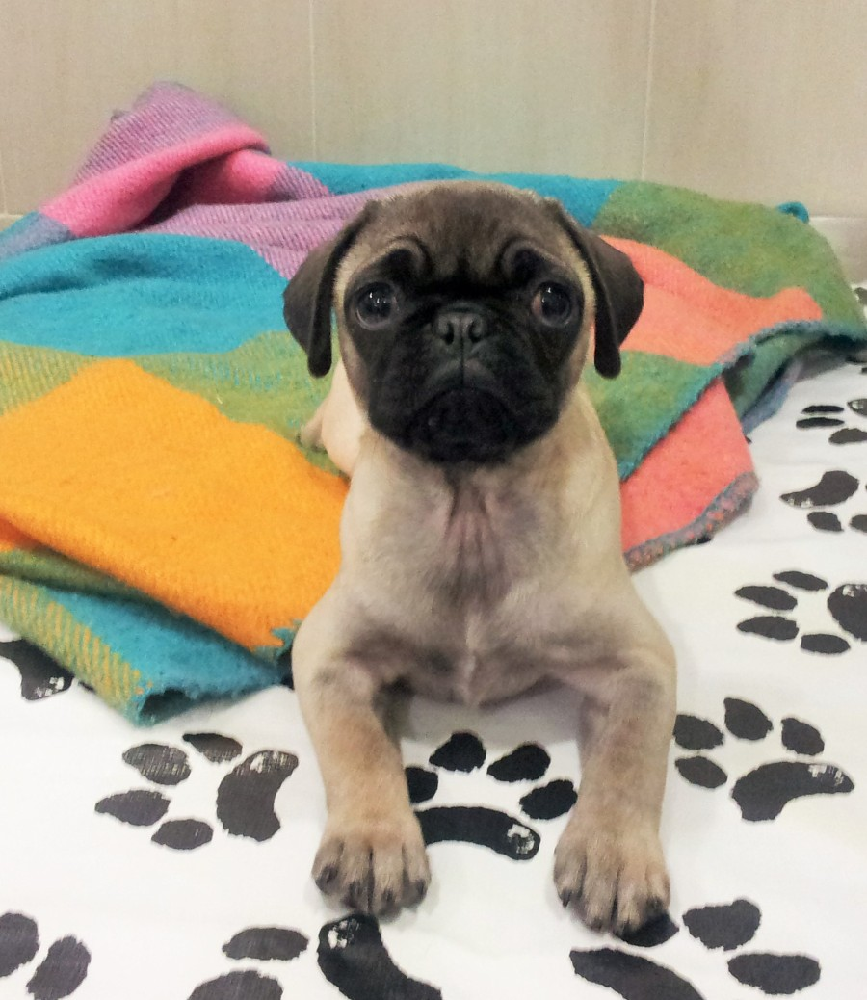

С настъпването на така чаканото от всички лято дойде и времето на големите жеги. Високите температури навън се отразяват както на нас, така и на животните. Ето няколко съвета как да помогнете на своя домашен любимец да се справи с горещините.
Най-важното е животните да имат достъп до прясна вода за пиене по всяко време.
У дома следете купичката за вода да е винаги пълна, а когато излизате навън или пътувате с кола, можете да вземете бутилка с вода с вас и да давате на кучето да пие от нея.
Хубаво е разходките с домашния любимец да са рано сутрин и привечер когато все още навън е прохладно. Също така не се препоръчват уморителните и интензивни упражнения и тренировки като бягане след колело и други.
Ако сте стопанин на куче със светла козина, не забравяйте преди излизане да намажете със слънцезащитен крем носа и ушите му за да го предпазите от изгаряне!
Препоръчително е да разделите храната на кучето и котката на два приема за да се улесни храносмилането. По принцип повечето животни сами намаляват консумацията на храна когато навън е много горещо.
И моля НИКОГА не оставяйте кучето си в колата само през лятото! Дори за кратко време температурата в автомобила може да достигне над 50 градуса, а кучетата имат малко потни жлези и са предразположени към прегряване и получаване на топлинен удар.
За домашните гризачи също е много важно да имат винаги прясна вода и свежа храна, а клетката им не трябва да е на слънце, нито до прозорец поради опасност от въздушно течение.
И накрая една идея за разхлаждане: някои кучета се чувстват прекрасно ако им облечете намокрена детска фланелка вкъщи или преди разходка!